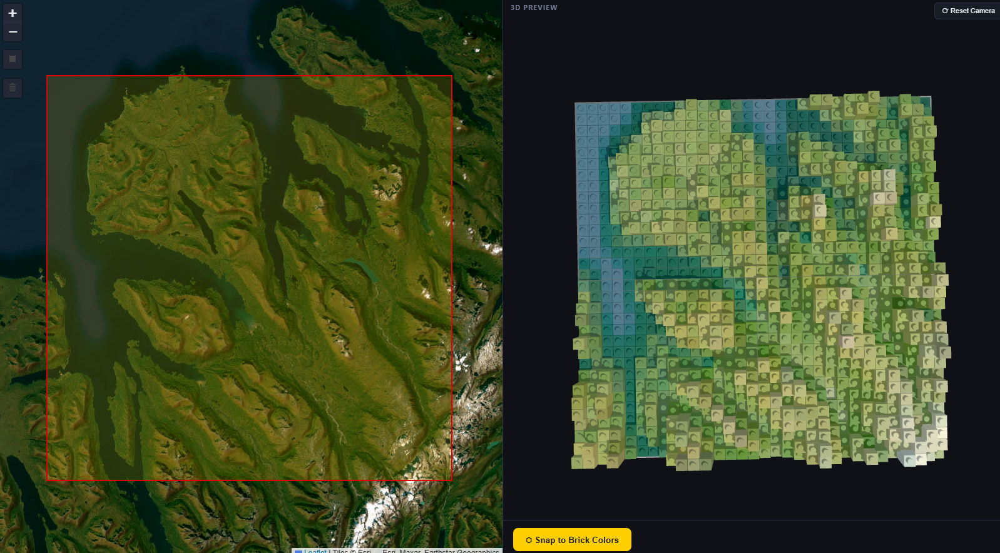
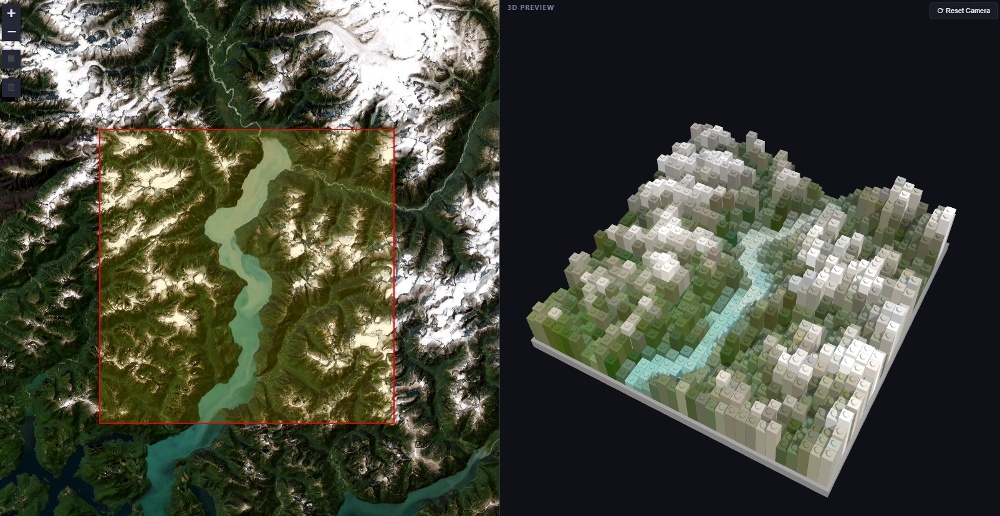

I, like many, have been very inspired by Atlas (Chenxiao) Guo's many award-winning LEGO Group maps. So I wanted to try and take a developer crack at it!
Introducing my latest project, the Brick Elevation Map Builder. Choose an area, an elevation, a color scheme, and let it build a standard 32x32 LEGO plate for you for that landscape! I added support to convert to official LEGO colors, and the capability to export a LEGO BrickLink, Inc. xml file and instructions to buy the parts and build your model yourself.
You can change and edit the model as well to make sure it's exactly how you want it. I have had a ton of fun just brickifying assorted landscapes, mountains, canyons, hometowns, and more. Give it a shot and show me what you can generate!
How It Works
Getting the Elevation Data
The app uses AWS Terrarium terrain tiles, a public, CORS-enabled tileset that encodes elevation in the RGB channels of PNG images. Each pixel's elevation is decoded as:
elevation = (red * 256 + green + blue / 256) - 32768Draw a bounding box on the map, and the app fetches whichever tiles cover that area and samples a 32x32 grid of elevation values. That grid becomes the foundation for the brick model. No API key required, no rate limits, full Earth coverage.
Snapping to Official LEGO Colors
This is where it gets interesting. Elevation data gives you continuous floating-point values; LEGO gives you roughly 60 usable brick colors. Satellite imagery gives you millions of RGB values; LEGO gives you the same 60.
For the satellite mode, the app fetches ESRI World Imagery tiles for the same area and samples the color at each grid cell. A nearest-neighbor matcher then finds the closest official LEGO color using Euclidean distance in RGB space, sourced directly from the BrickLink catalog with actual production hex values.
Every color in the 3D preview maps to a real BrickLink color ID, which is what makes the exported XML actually usable. You can load it straight into a BrickLink wanted list and start ordering.

The 3D Preview
Once the grid is computed, Three.js renders a live 3D model where each cell becomes a stack of LEGO plates, taller for higher elevations and shorter for lower ones. The camera supports full orbit, zoom, and pan. The elevation scale is adjustable from 1 to 16 bricks, so you can exaggerate flat terrain or compress dramatic mountains into a reasonable build height. Individual bricks are clickable too, so you can repaint any cell manually if the automatic color assignment isn't quite right.

Color Modes
The app ships with 14 palettes, each mapping elevation ranges to a different set of LEGO brick colors:
- Terrain - classic green lowlands to white peaks
- Satellite - sampled directly from ESRI imagery
- Arctic, Desert, Mars, Tropical - themed environments
- Mordor, Neon - because why not
- Viridis, Magma, Inferno, Plasma - scientific color maps adapted to LEGO's palette
Every palette uses only officially produced LEGO brick colors, so any mode you pick generates a valid, orderable parts list.
Exporting the Build
- BrickLink XML - import directly into BrickLink to find and purchase the exact parts you need
- PDF instructions - layer-by-layer assembly guide generated in the browser
- CSV parts list - flat spreadsheet of all bricks, quantities, and colors
No Backend Required
The entire app runs in the browser. No server, no database, no build step. Elevation tiles from AWS, imagery from ESRI, and everything else (grid math, color snapping, 3D rendering, PDF generation) runs client-side in vanilla JavaScript.
Try it here and see what it looks like in brick.